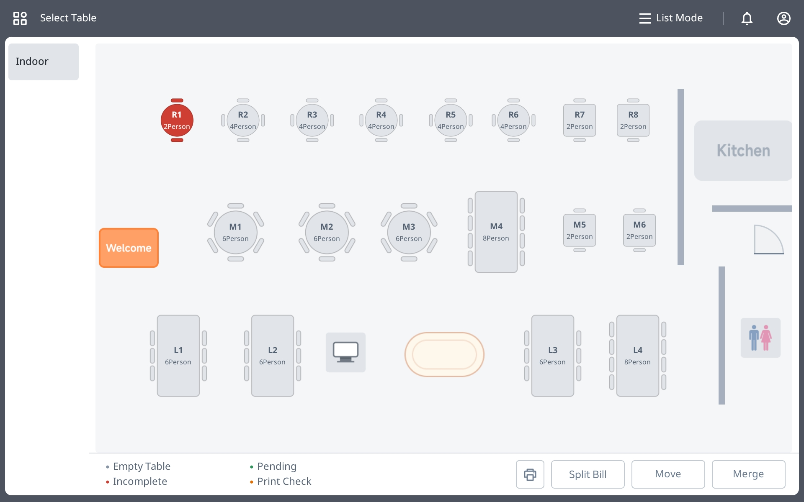
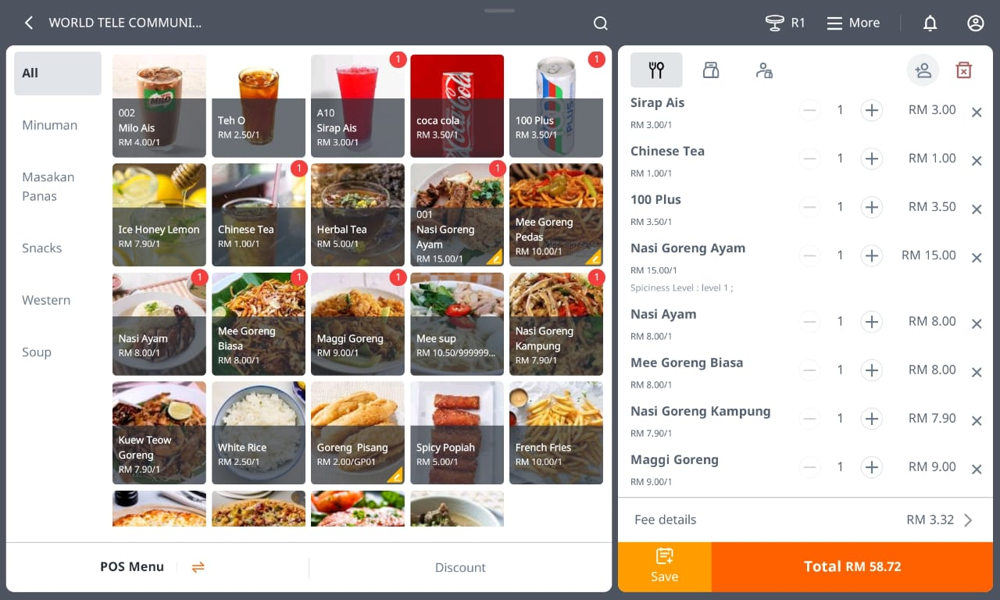

PosPay Business Solution
Modern POS System & Cashless Payment Solution
Modern POS System & Cashless Payment Solution
PosPay is a modern business solution provider that helps businesses manage POS systems, cashless payments, QR payments, inventory, sales reports, and business operations.
PosPay system is powered by iPOS software, one of the popular POS software solutions used by many businesses in Malaysia.
This system is suitable for restaurants, retail shops, cafes, mini markets, and many modern businesses.
World Tele Communication is proud to provide PosPay solutions and support services for local businesses in Melaka.



